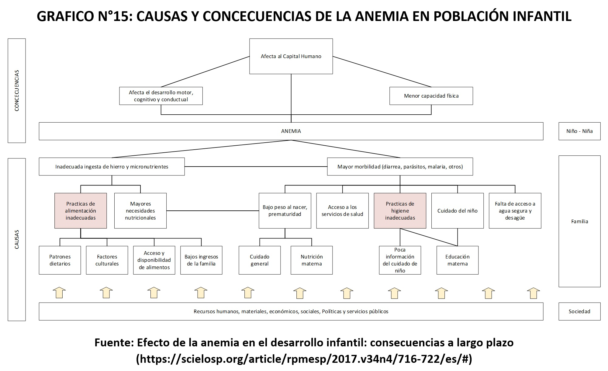
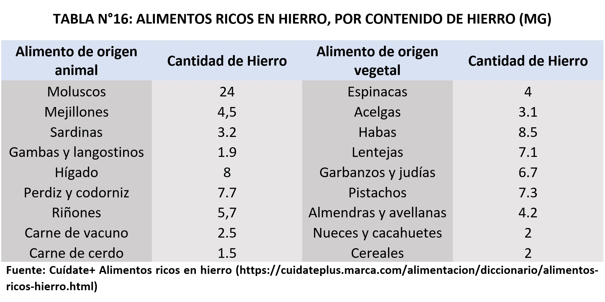
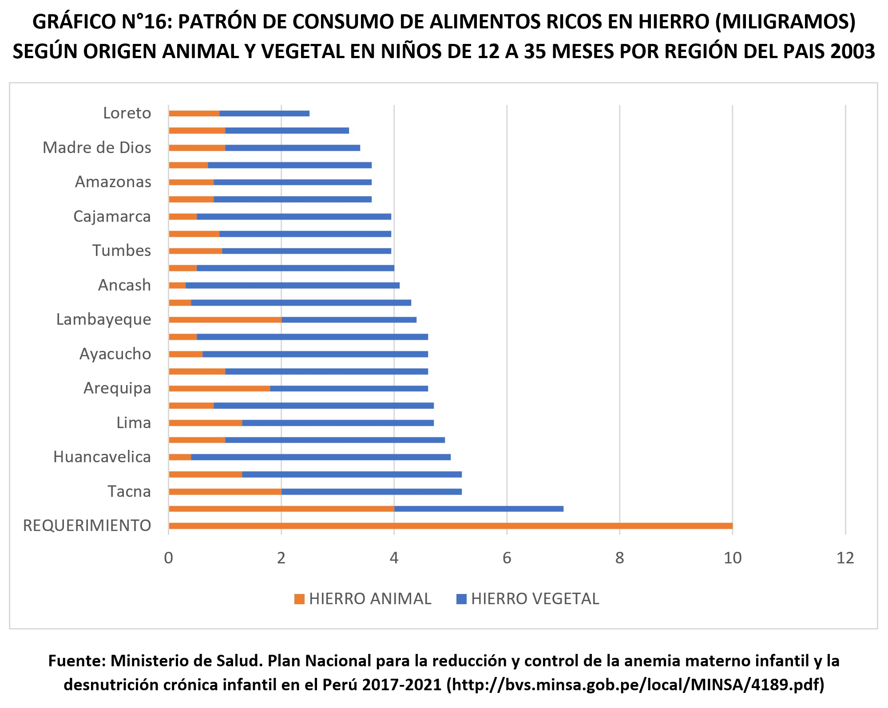
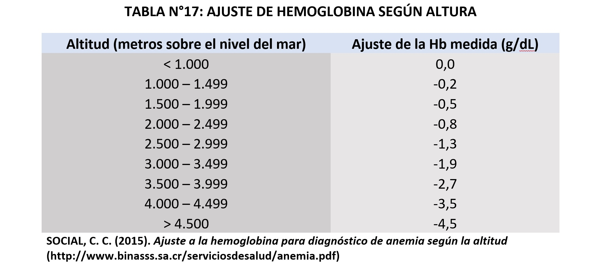
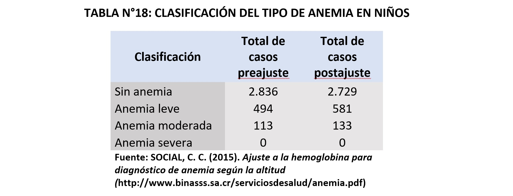
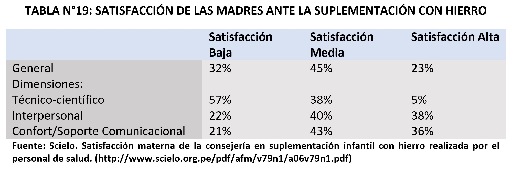
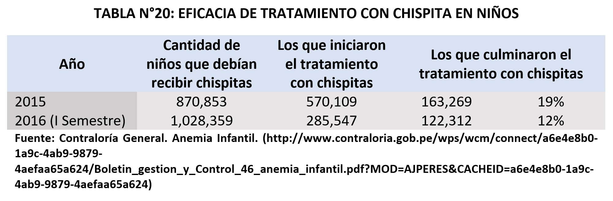
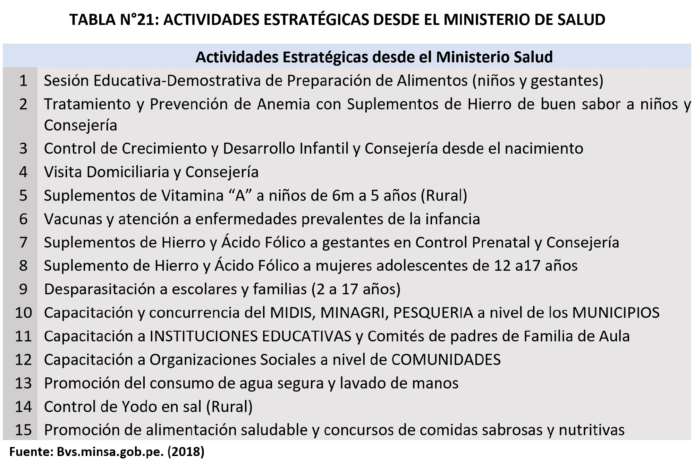
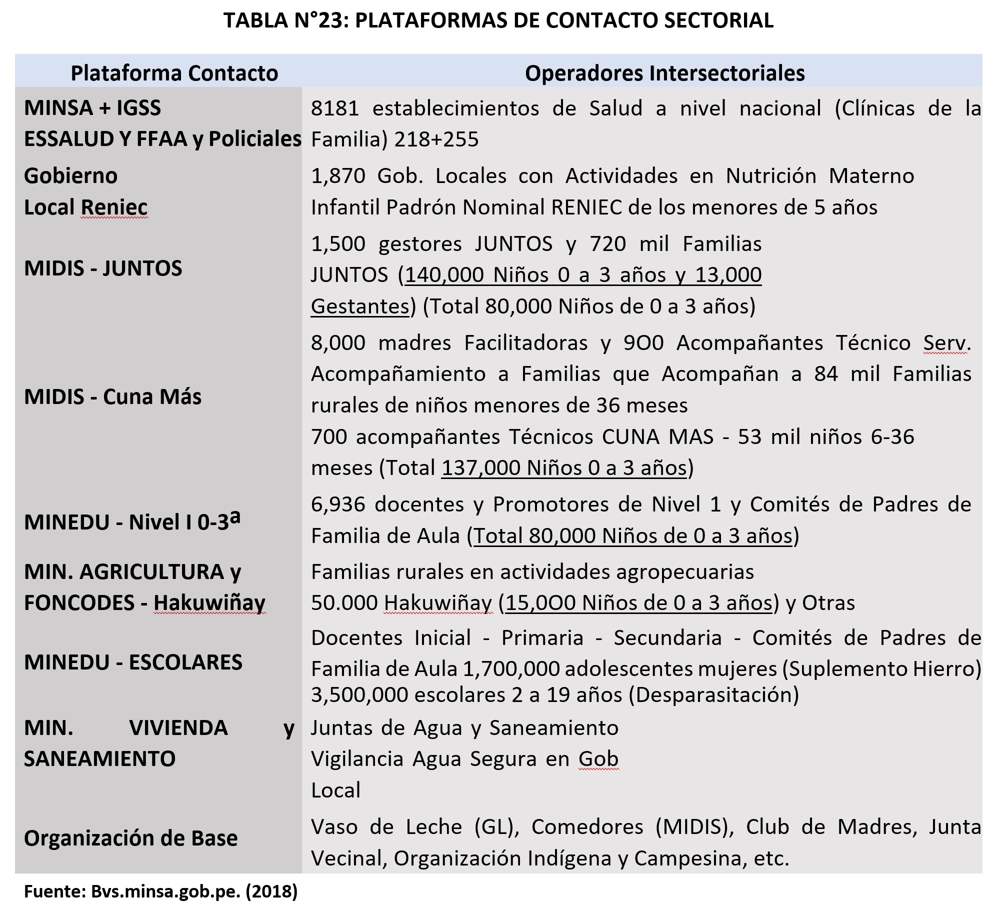
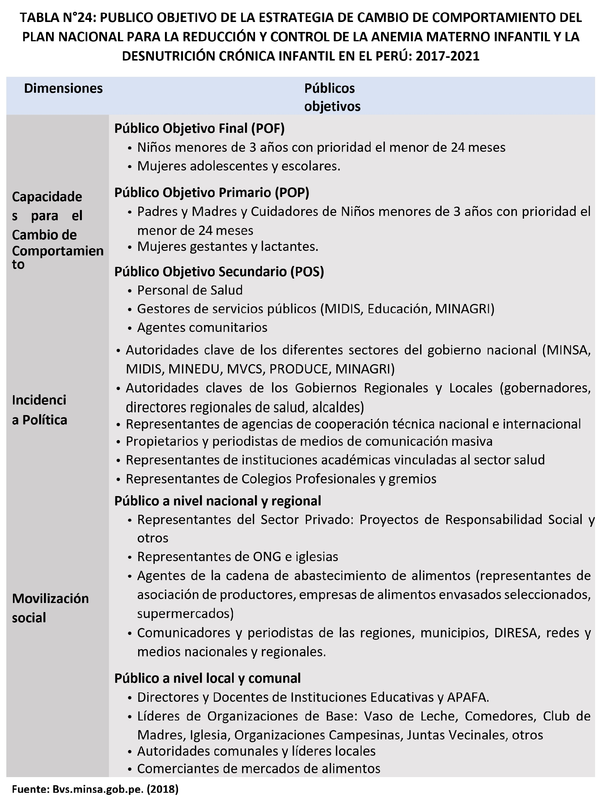

Hemos identificado 5 causas importantes en la prevalencia de anemia. Dos de ellas las resaltamos en el Grafico N°15 obtenido de una investigación de la página SciELO (malos hábitos alimenticios y los malos hábitos de higiene). Las otras causas que creemos importante serian malos diagnósticos, malos tratamientos y un seguimiento inadecuado del tratamiento.
Al centrarnos en la anemia por deficiencia de hierro, se considera una de las principales causas una dieta baja en hierro. Primero definimos cuales son los alimentos ricos en hierro, a continuación, mostramos las cantidades definidas en mg por cada 100gr de producto consumido.
A esto hay que añadirle que para la correcta absorción d hierro de origen vegetal, es necesaria una cantidad de vitamina C. Por ende, en comparativa, podemos concluir que la mayor cantidad de hierro en proporción, se encuentra en el origen animal [21]. Además, algunos productos como lo son el café, té, leche, yema de huevo, fibra, proteína de soja y minerales como el zinc, magnesio, calcio y cobre merman la correcta absorción de hierro [22].
En la tabla mostrada anteriormente podemos apreciar como la mayor cantidad de hierro consumido en nuestro país por niños de 12 a 35 meses. Como podemos observar el consumo de origen vegetal supera proporcionalmente al consumo de origen animal, por lo que la dieta de estos niños no contiene una suficiente cantidad de hierro, siendo esta de apenas 2 mg de hierro hem por día. Añadir que esta absorción se ve afectada por otros productos, el principal en este caso la leche. Sumado a esto, se encuentra que las mujeres en edad fértil al 2003 solo consumían 7.4 mg de hierro al día, dato que no ha variado en gran medida en la actualidad [23].
Para un niño de 12 a 35 meses de edad, el consumo de hierro debe ser de aproximadamente 11 mg por día. Asimismo, para una mujer en edad fértil, el consumo de hierro debe ser de 18 mg por día. Con esto podemos concluir que existe una deficiencia causa por la dieta [24].
La anemia y la parasitosis intestinal son problemas de salud pública que aquejan a la sociedad especialmente en niños de edades pre escolar y escolar. Especialistas del Minsa recomiendan el lavado adecuado de manos y alimentos, así como la desparasitación cada seis meses para evitar ser víctimas de estos gusanos.
El Instituto Nacional de Salud presentó más de cien especies de parásitos que afectan al ser humano. La presencia de parásitos intestinales, como los helmintos, provoca pérdida de hierro, proteínas y sangre que favorece la aparición de cuadros de anemia y desnutrición crónica, principalmente en los niños, informó, Manuel Espinoza Silva, médico infectólogo del Instituto Nacional de Salud del Ministerio de Salud. Entre las principales especies de helmintos transmitidos por el suelo que infectan al ser humano figuran la ascáride (Ascaris lumbricoides), el tricocéfalo (Trichuris trichiura) y el anquilostoma (Necator americanus y Ancylostoma duodenale) que pueden dañar la mucosa intestinal provocando una mala absorción e inhibición del apetito [25].
Según estudios en Trujillo estudio la prevalencia de parásitos intestinal en beneficiados del Programa de Vaso de leche de la Municipalidad distrital de patapo-anexo la cria, y fueron identificados los paracitos Blastocystis hominis, Ascaris lumbricoides, Entamoeba coli y Enterobius vermicularis en niños de 1 a 6 años y en anemia fue de 31,67% para la anemia leve y 5.00% para la anemia moderada [25]. En Yantalo en la provincia de Moyobamba el departamento de San martin de Porres, se examinaron a 120 niños entre 5 y 17 años de cual 56 eran niños y 64 niñas, el 28,3% presento problemas de anemia, 19 de grao leve y 15de grado moderado, y u total de 44 niños presentaban un grado de desnutricion,35 leve, 7 moderado y 2 severo. En total se encontraron 64 niños parasitados (53,3%), de los cuales 13 (20,31%) estuvieron poliparasitados. Del total de niños parasitados, 38 (59,38%) presentaron infección por helmintos y 28 (43,75%) por protozoarios. El parásito patógeno más frecuentemente encontrado fue T. trichura en 24 niños (37,5%), seguido por A. lumbricoides en 8 niños (12,5%) y de los Anquilostomideos en 5 niños (7,8%) [27].
Para saber si una persona tiene anemia o no, existen distintos métodos de averiguarlo. Por lo general se presentan síntomas como demasiado cansancio, dificultad para concentrarse, irritabilidad, entre otros. Lo más común es acudir a un médico para descartar la presencia de anemia o no, los procedimientos se basan en dos partes; uno de estos es la revisión física en la cual el médico revisa si el paciente presenta las encías, las uñas o la piel de color amarillento [28]. El segundo paso es descartar la presencia de anemia mediante el nivel de hemoglobina en la sangre; en el caso de madres gestantes si la hemoglobina es menor a 11 gr/dl se tiene como diagnóstico que el paciente tiene anemia [29].
Pero, según la OMS, vivir a cierta altitud por encima del nivel del mar aumenta las concentraciones de hemoglobina; por consiguiente, en quienes residen en zonas elevadas la prevalencia de anemia puede infravalorarse si se aplican los valores de corte corrientes, es decir, existen posibles errores al momento del diagnóstico puesto que las personas que viven en las alturas suelen tener índices más altos de hemoglobina y esto acarrea a que no se le pueda hacer un diagnóstico exacto y adecuado. Sabiendo que existe un desbalance entre la hemoglobina de las personas que vivan en las alturas y de las que no, se considera que para un buen diagnóstico de anemia se debería cambiar las cifras estándar que existen. Un estudio realizado por la Caja Costarricense de Seguro Social (CCSS) en un grupo de niños entre 6 y 24 meses, muestra que la cantidad de niños diagnosticados con anemia que vivían en lugares de altura se incrementa al aplicarle ajustes a los resultados de la hemoglobina [30].
En la siguiente tabla se muestra las cifras que se le disminuye a la cantidad de hemoglobina obtenida según la altura de donde provienen.
A continuación, se presenta los resultados obtenidos por la CCSS después de haber diagnosticado anemia a niños con anemia antes y después de hacer uso de los ajustes.
Claramente vemos que se evitaría un mal diagnostico si se emplearía estos ajustes al momento de medir la hemoglobina en la sangre y así se podría conocer las verdaderas cifras de personas que tienen anemia.
Los tratamientos para la anemia hoy en día son diversos, puesto que existe una para cada tipo de anemia. Los cuales son:
Anemia ferropénica.
Anemia por deficiencia de vitaminas.
Anemia por enfermedad crónica.
Anemia aplásica.
Anemias asociadas con enfermedades de la médula ósea.
Anemias hemolíticas.
Anemia drepanocítica.
Talasemia.
De acuerdo al tipo de anemia que se tiene se siguen distintos tratamientos en unos es un cambio de dieta, inclusión de ingesta de suplementos y/o vitaminas, trasfusiones de sangre, etc. [31] Para un buen tratamiento de la anemia tiene que existir un adecuado diagnóstico, puesto que si se injiere suplementos de hierro sin tener anemia ferropénica el tratamiento no sería eficaz.
Debido a un mal diagnostico también existen personas que sin tener anemia están injiriendo suplementos de hierro y de ello por el exceso de hierro a un mediano plazo se puede llegar a tener anemia.
Otro factor de que los tratamientos no llegan a funcionar es el de no tener un control adecuado del tratamiento que están llevando.
El uso de micronutrientes como suplemento para combatir la anemia es una técnica que se ha venido empleando en nuestro país durante los últimos años. Sin embargo, no existía un estudio sobre el nivel de satisfacción de las madres relacionado con esta solución. Por ende, nos es posible afirmar que no existió un adecuado seguimiento de los resultados de este método.
Una de las cosas que debemos tomar en cuenta es que no a todas las madres se les indica de forma adecuada como se debe recibir el suplemento. Esto a su vez repercute en la satisfacción del usuario, ya que no se está combatiendo el problema adecuadamente. En datos estadísticos, el 45,1% de las madres con niños de entre 6 y 11 meses, no cuenta con la información necesaria.
Concluimos que, en términos generales, las madres entrevistadas obtuvieron una satisfacción media respecto al servicio brindado por los profesionales de salud. Los cual nos deja ver una escasa atención centrada en la persona y como esto influye en el proceso de combatir la anemia [32].
Para los años 2015 y 2016 el Minsa ha comprado más de 380 sobres de micronutrientes para prevenir la anemia (gasto de 34.6 millones de soles), sin embargo, no se ha logrado reducir la prevalencia de anemia infantil (43.5%).
Uno de los factores es la ineficacia en la entrega de estos micronutrientes en niños menores de tres años. Pocos fueron aquellos que culminaron su tratamiento de manera efectiva.
El personal del Minsa cumplió parcialmente con brindar consejería nutricional a las madres. Solo el 28% de los niños recibió una consejería de su tratamiento. El 87.6% de los niños que comenzó su tratamiento sin consejería alguna lo abandonaron definitivamente.
Por último, los establecimientos de salud cumplieron parcialmente con realizar exámenes de hemoglobina a los menores. Solo al 1.9% de los niños se les realizó un examen de hemoglobina a los seis meses de iniciada la suplementación, y solo el 0.8% a los doce meses [33].
En este apartado resumiremos las diferentes soluciones a la prevalencia de anemia en diferentes países del mundo. Por facilidad la estructuraremos por países, donde dentro de cada uno veremos las soluciones llevadas a cabo por el gobierno.
En nuestro país El Estado para combatir la anemia tiene un plan nacional para la reducción y control de la anemia materno infantil y la desnutrición crónica infantil en el periodo 2017-2021, el cual cuenta con objetivos que al 2021 estos deben ser alcanzados. A continuación, se desarrollará los objetivos que se desarrollaran y se están desarrollando con énfasis en mujeres gestantes. El cuadro siguiente se muestra las distintas actividades por parte del Ministerio de Salud.
OBJETIVO 1 Tratar y prevenir la anemia con suplementos de hierro y fortificación casera a menores de 36 meses, gestantes y adolescente como parte de la atención de la salud materno infantil. Dentro de este objetivo se desarrollaron varias actividades.
i) La Actividad 2 de dicho documento consiste en la suplementación de hierro a madres con anemia en dosis terapéuticas durante 6 meses, con el objetivo de tratar y fortalecer las reservas de hierro del organismo de la gestante [34].
ii) Actividad 9, en esta actividad se desarrollan sesiones demostrativas de preparación de alimentos ricos en hierro para gestantes, madres lactantes y de niños de 6 a 12 meses de edad; según el plan Nacional se ha evidenciado que después de realizar estas sesiones de logran mejoras estadísticas en la ingesta de hierro en hogares periurbanos de Lima y algunas comunidades de Cajamarca. Las sesiones que se realizan son con alimentos disponibles en su localidad para que se valoren las costumbres de cada ciudadano con una metodología de aprender-haciendo, donde también se fortalecen la práctica de lavados de manos [34].
iii) Actividad 10 en esta actividad se implementarán actividades colectivas masivas adecuadas para zonas rurales y urbanas con el objetico de sensibilizar a la población en general para que conozcan medidas prácticas y sencillez para que puedan aplicarlas en los hogares para así poder prevenir la anemia. Para ello harán uso de los medios de comunicación, redes sociales, etc. Que enmarca el producto del programa articulado nutricional “POBLACIÓN INFORMADA SOBRE EL CUIDADO INFANTIL Y PRÁCTICAS SALUDABLES PARA LA PREVENCIÓN DE ANEMIA Y DESNUTRICIÓN INFANTIL” [34].
OBJETIVO 3, este objetivo tiene el fin promover la concurrencia de todas las plataformas de contacto gubernamentales, sectorial y sociales existentes, en ámbitos locales se realizará un mapeo de las diversas plataformas de contacto. En el programa Juntos se estima que existen 13 mil mujeres gestantes [34].

i) Actividad 13, el Plan Nacional considera que los agentes comunitarios de la salud, las organizaciones sociales Vaso de Leche, Clubes de Madres, Comedores Populares son importantes en todo nuestro país, estos tienen un rol muy dinámico por ello se fortalecerá su participación en prevención de anemia para que se conviertan en voceros comunitario de información para la población en general [34].
ii) En las comunidades rurales se reforzará el uso de espacios de los 1460 Centro de Promoción y Vigilancia Comunal del cuidado de la madre y el niño (CPVC), que fueron instalados como puntos estratégicos de información a la población [34].
iii) Actividad 14, esta actividad busca fortalecer las capacidades del Consejo Municipal en las actividades del Grupo Impulsador de la Anemia, puesto que es importante el compromiso y liderazgo de las autoridades del gobierno local para un mejor desarrollo de las acciones estratégicas del Plan Nacional para ello los gobiernos locales cuentan con cinco líneas presupuestales en el marco del Programa Articulado Nutricional referidas a Agua y Saneamiento, a Instituciones Educativas, Municipios, Comunidades y Familias Saludables [34].
iv) Actividad 15, se fomentará el uso de una variedad de canales de comunicación con ejercicios de demostraciones, canciones populares, actuación y juegos para que exista un adecuado lavado de manos [34].
OBJETIVO 4, el Plan Nacional busca la articulación con programas de agricultura como Hakuwiñay (de Foncodes), para optimizar las oportunidades de y acceso a productos alimentarios e origen animal ricos en hierro y el desarrollo de productos fortificados con micronutrientes para la alimentación infantil y población en general. Por otro lado, también se busca promover la instalación de espacios en los hogares donde se produzcan hortalizas de colores amarillo, naranja, rojo y hojas de color verde oscuro para el consumo familiar [34].
El Plan Nacional considera que la fortificación de alimentos es una estrategia exitosa para controlar la anemia en productos alimenticios de consumo masivo, tomando de ejemplo a países como Chile ,Colombia y Brasil que cuentan con una experiencia en estos aspectos; Chile promovió la distribución de Purita Mamá, alimento en polvo con que se prepara una bebida láctea instantánea, fortificada con vitaminas y minerales, ácidos grasos y omega 3; Colombia cuenta con Nutrigest, para gestantes, y Bienestarina, para menores de 5 años, que contiene micronutrientes y balance adecuado de aminoácidos esenciales y omega 3.Estas alternativas tienen bastante aceptación en estos países y han ayudado a lograr controlar la situación de anemia infantil y están a la venta en los mercados y farmacias. Brasil fortifico el arroz con resultados muy alentadores en la reducción de anemia de sus consumidores [34].
En nuestro país se dispone de fortificación de harinas de trigo con hierro y otros micronutrientes, sin embargo, se estima un consumo nacional de harina de trigo de 5.59 gramos per cápita día en el 2014, lo cual es una cantidad insuficiente para prevenir la anemia. El Plan Nacional promoverá la fortificación de alimentos de consumo masivo basadas en productos locales, disponibles para las poblaciones más vulnerables.
OBJETIVO 5, se considera muy importante el seguimiento y asistencia técnica para asegurar la puesta en práctica de las actividades estratégicas para un análisis, interpretación y difusión de información para saber la cobertura del Plan Nacional, ello hará saber sobre las dificultades en la implementación y permita tomar una reorientación de las actividades si se viera el caso [1].
El monitoreo y evaluación del Plan Nacional para la Reducción y Control de la Anemia Materno Infantil y la Desnutrición Crónica Infantil estará a cargo de la Dirección General de Intervenciones Estratégicas en Salud Pública en estrecha coordinación con la Oficina General de Tecnología de Información del Ministerio de Salud y el Centro Nacional de Alimentación y Nutrición del INS. Los compontes que tendrá son Datos Administrativos: Hitos de Cumplimiento y Datos de muestra poblacional [34].
Las actividades estratégicas consideradas con enfoque participativo y pertinencia cultural a través de estrategias como la priorización de ámbitos territoriales, incorporación de indicadores referidos a anemia en instrumentos de gestión, Comunicación para el Cambio de Comportamiento [34].
Los micronutrientes, conocidos también como 'chispitas, son complementos nutritivos que contienen pequeñas cantidades de hierro, zinc, vitamina A, vitamina C y ácido fólico, que ayudan al organismo de los menores para prevenir la anemia. Estos micronutrientes vienen en sobrecitos de 1 gramo en polvo que son distribuidos en los centros de salud públicos. Según el Minsa, la distribución de los micronutrientes es uno de los ejes de la política para prevenir la anemia. Esto a que se ha comprobado su eficacia en países de Asia, África y América, y porque presentan mayor aceptación en los niños debido a su mejor sabor y fácil administración [46]. Ávila señala que es importante que la comida esté tibia para que no cambie el sabor, ni color de los alimentos. La correcta preparación de los multi-micronutrientes es muy importante para el desarrollo de los menores de tres años.
La responsable de la etapa vida niño de la microred Yanahuara-Sachaca, Betsabé Llajaruna Ortíz, señala que estas "chispitas" son muy buenas para los menores, sin embargo, si se preparan de manera incorrecta pueden provocar algunas deficiencias. "Es primordial el lavado de manos antes de preparar el multi-micronutriente, además que la comida esté casi fría para poder mezclarlo con el polvo del sobrecito de un gramo", dijo.
Sin embargo, la especialista reconoció que este multivitamínico puede causar vómitos, estreñimiento o diarrea de acuerdo al menor. Los problemas que se presentan son principalmente debido a la mala práctica de las madres en la preparación, pero son muy pocos casos en esta red [47].
El ministerio de salud incorporo en la relación de requerimientos, de la Central Compras Públicas – PERU COMPRAS, añadió al arroz fortificado con hierro las cuales serán entregadas a través de programas sociales con la finalidad de contribuir a la reducción de anemia en nuestro país.
DESCRIPCION GENERAL El arroz fortificado con vitaminas y minerales es un arroz blanco, descascarado del que se ha eliminado el salvado y el germen, las cuales contienen una adición de micronutrientes [48].
CARACTERISTICAS ESPECÍFICAS Dentro de las características organolépticas se tiene: • Color : Blanco • Olor : exento de olores • Sabor : exento de sabores extraños Características nutricionales: En 100 g de arroz crudo • Vitamina A UI …………………………… 800 • Tiamina (B1) mg ………………………… 0.35 • Niacina (B3) mg …………………………… 4.0 • Piridoxina (B6) mg ……………………… 0.36 • Folato (B9) ug …………………………………… 120 • Cianocobalamina (B12) ug …………… 0.64 • Vitamina D ug ………………………………………… 1.4 • Vitamina E mg ……………………………………… 3.1 • Hierro mg ………………………………………………… 4.2 • Zinc mg ………………………………………………………… 3.2
Chile es uno de los países a nivel mundial con menor tasa de anemia en su población. En el 2016, presentaba un 15% de anemia en mujeres embarazadas de su población, lo que lo colocaría en el país con menor porcentaje de anemia en Latinoamérica [35]. Para promover la disminución de anemia en su país, Chile instauró programas de prevención y manejo de las patologías de mayor importancia asociadas al déficit nutricional: anemia, desnutrición, diarrea aguda, desnutrición intrauterina. Las acciones focalizadas permitieron que los indicadores nutricionales mejoraran muy por encima del desarrollo económico del país [36]. Así mismo, se hizo entrega de leche para niños y embarazadas, programas escolares, bonos y beneficios sociales entre otras; todo esto contribuyó al incremento económico del país. Sin embargo, el país presenta una de las tasas más altas de la región de niños obesos, llegando al 10% de la población de esa edad y que ahora, el desafío es la reducción de esta última cifra [37].
Colombia posee un porcentaje aprox. de 20% a 39.9% de la población [38], del cual en escolares llega a 47%, para disminuir estas estadísticas Colombia está empleando el “Programa de Alimentación Escolar(PAE) el cual proporciona una dieta balanceada a través de diversos tratamientos como: tratamiento oral y el hierro parental, el primero se contiene sulfato de hierro, gluconato y fumarato y la dosis es de 3 a 6 mg por kilogramo de peso corporal además la adición de vitamina c mejora la absorción de este, el segundo es hierro por vía intravenosa, el cual a demostrado ser más efectivo, su uso es recomendable para pacientes con malabsorción de hierro, en la dosis se maneja un estándar de Gluconato férrico de 125mg/10-60 min, hierro sacarosa 100-400 mg/2-90 min, dextrano de hierro 100mg/2m; si bien esta terapia es de mayor costo la calidad de vida mejora de manera significativa [39][40][41]. Además, para disminuir la desnutrición se está ejerciendo el Plan decenal de salud pública y el plan nacional de seguridad alimentaria y nutricional, dentro de estas se encuentra la ESTRATEGIA NACIONAL PARA LA PREVENCION Y CONTROL DE LAS DEFICIENCIAS DE MICRONUTRIENTES la cual está dirigida para dar énfasis en grupos e mayor vulnerabilidad como son los niños y niñas hasta los 12 años, mujeres gestantes y en edad fértil [42].
Hierro intravenoso para la deficiencia grave de hierro [43]
Canadá es uno de los países con menor tasa de prevalencia anemia a nivel mundial según los datos recopilados por el banco mundial, por lo cual decidimos buscar como era el control de la anemia por deficiencia de hierro en este país. El mayor problema que existe en este país con relación a la anemia es la poca absorción de hierro en algunas personas, por lo que el plan se encuentra enfocado a la aplicación de hierro por vía intravenosa.
Beneficios del método: Se observan modestos beneficios en los niveles de hemoglobina y en la reducción de la necesidad de una trasfusión de sangre. Los beneficios discretos se explican ya que en los ensayos clínicos se incluyeron pacientes con un bajo déficit de hierro.
Daños del método: En la actualidad es raro que los preparados de hierro ocasionen la muerte, aunque algunas fichas advierten que puede originar anafilaxis. A su vez no existen datos sobre una toxicidad a largo plazo, aunque a corto plazo puede originar dolores y fiebre.
Proporción de información [44]
Otro de los países con menor tasa de prevalencia de anemia es Estados Unidos. En este caso, se difunde información sobre el Sistema de Información Nutricional sobre Vitaminas y Minerales de la OMS, datos sobre la concentración de hemoglobina para diagnosticar la anemia y una compilación de las actuales recomendaciones de la OMS.
En cuando a los planes de actualización, la Unidad de Micronutrientes del Departamento de Nutrición para la Salud y el Desarrollo de la OMS la revisión del documento y de ser necesario su actualización.